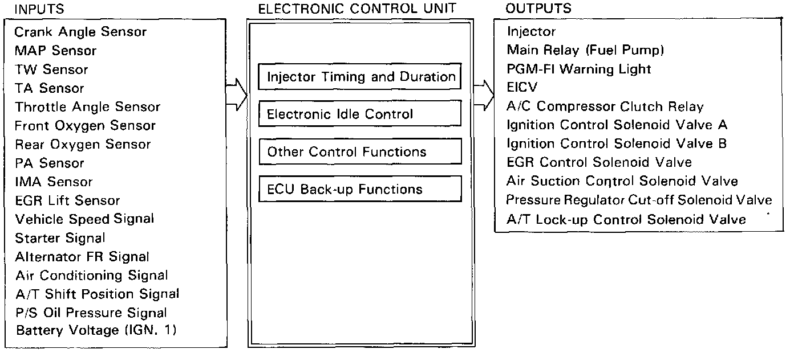

PGM-FI System

SYSTEM DESCRIPTION
Injector Timing and Duration
The ECU contains memories for the basic discharge durations at various engine speeds and manifold pressures. The basic discharge duration, after being read out from the memory, is further modified by signals sent from various sensors to obtain the final discharge duration.
Electronic Idle Control
Electronic Idle Control Valve (EICV)
When the engine is cold, the A/C compressor is on, the transmission is in gear (A/T only), power steering oil pressure is high or the alternator is charging, the ECU controls current to the EICV to maintain correct idle speed.
Other Control Functions
1. Starting Control
When the engine is started, the ECU provides a rich mixture.
2. Fuel Pump Control
- When the ignition switch is initially turned on, the ECU supplies ground to the main relay which supplies current to the fuel pump for 2 seconds to pressurize the fuel system.
- When the engine is running the ECU supplies ground to the main relay which supplies current to the fuel pump.
- When the engine is not running and the ignition is on, the ECU cuts ground to the main relay which cuts current to the fuel pump.
3. Fuel Cut-off Control
- During deceleration with the throttle valve closed, current to the injectors is cut-off at speeds over 1,100 rpm, to improve fuel economy.
- Fuel cut-off action also takes place when engine speed exceeds 6,700 rpm regardless of the position of the throttle valve to protect engine from over running.
4. A/C Compressor Clutch Relay
When the ECU receives a demand for cooling from the air conditioning system (radiator fan control unit), it delays the compressor from being energized, and enriches the mixture to assure smooth transition to the A/C mode.
5. Ignition Control Solenoid Valves (ICSV A, ICSV B)
When the coolant temperature is below 60°C (140°F), manifold vacuum is blocked to both A and B advance diaphragms. Above coolant temperature 60°C (140°F) the ECU cuts the ground to ICSV A and ICSV B as necessary to provide maximum performance and fuel economy, while protecting engine by preventing detonation from occuring.
6. Pressure Regulator Cut-off Solenoid Valve (PRCSV)
When the coolant temperature is above 105°C (221°F) or the intake air temperature is above 80°C (176°F), the PRCSV is energized, cutting manifold vacuum to the fuel pressure regulator.
7. Air Suction Control Solenoid Valve (ASCSV)
When the engine is started, the ECU delays the start at air suction by delaying 10-60 seconds (depending at coolant temperature) energizing ASCSV which delays supplying vacuum to the air suction valve.
8. A/T Lock-up Control Solenoid Valve (ALCSV)
The speed and throttle angle sensor inputs to the ECU are used to send an on/off voltage signal to the ALCSV, for precise timing of the torque converter lock-up system.
9. EGR Control Solenoid Valve (EGR CSV)
When the EGR is required for control of oxides nitrogen (NOx) emissions, the ECU supplying ground to the EGRCSV which supplies regulated vacuum to the EGR valve.
ECU Back-up Functions
1. Fail-Safe Function
When an abnormality occurs in a signal from a sensor, the ECU ignores that signal and assumes a pre-programmed value that allows the engine to continue to run.
2. Back-up Function
When an abnormality occurs in the ECU itself, the injections are controlled by a back-up circuit independent of the system in order to permit minimal driving.
3. Self-diagnosis Function (PGM-FI warning light, Red and Yellow LED indicators)
- When an abnormality occurs in a signal from a sensor, the ECU lights the PGM-FI warning light, stores the failure code in erasable memory and indicates the code with the Red LED on the ECU anytime the ignition is on. When the ignition is initially turned on, the ECU supplies ground for the PGM-FI warning light for 2 seconds.
- When the ECU detects that the EICV has exceeded the pre-programmed limits, in order to control the idle speed, the Yellow LED indicates this by remaining on, or blinking depending on the limit exceeded.